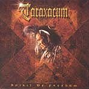

|
|
||
Taraxacum : Spirit of Freedom (2001) |
|

http://www.taraxacum.net |
1. Spirit of Freedom 4:53 |
6.5/10 |
|
Formada por miembros de Edguy (Tobias Exxel, Felix Bohnke), Steel Prophet (Rick Mythiasin) y otros provenientes de bandas algo menos conocidas, Taraxacum presenta "Spirit of Freedom", su álbum debut, que además ha sido mezclado por Kai Hansen y su compañero de banda Dirk Schlächter. Estas credenciales parece que deberían ser garantía de un gran disco, pero el resultado final deja algo que desear. Y es que esta banda ha grabado un disco sin un estilo definido, desde luego lejano a Edguy o a Steel Prophet, con sonidos que van desde el power metal al hard rock de los 70 y que incluye además elementos bastante progresivos. El resultado es un disco sin una personalidad definida, que trata de mezclar demasiados elementos y que en lugar de original resulta extraño, o quizás demasiado original. El disco comienza bien: "Spirit of Freedom" es una buena canción de power metal con un estribillo potente y que se recuerda desde la primera vez que lo escuchas. En esta canción, y durante todo el disco, Rick Mythiasin canta en un tono bastante alto, demasiado para mi gusto, y da buena muestra de sus típicos gritos. "Blast Off" es una canción rápida que mezcla de todo: power metal, metal clásico estilo años 80, sonidos progresivos etc."Alone" es una balada emotiva pero algo triste y oscura. Le sigue "Circle of Fools", canción con un aire de los 70, y que supongo que está bien siempre que te gusten los Rolling Stones. "Delirium" es una canción algo oscura y que se hace pesada, aunque los solos instrumentales, con un sonido bastante progresivo, están bien. "Life Goes On" es otra canción con sonido de rock años 70, donde lo más destacable es la voz de Rick Mythiasin, cargada de emoción y sentimiento. "Never Let You Go" es una canción alegre y rápida, aunque no especialmente potente. El estribillo, cantado a coro por los miembros de la banda, es brillante y pegadizo, y el momento más inspirador del disco. "Believe in You" es otra balada, más alegre que "Alone", bien ejecutada, pero que no destaca por nada. "Think!" es la última canción, quizá la más potente y oscura del álbum, incluso tiene un aire de thrash metal, pero no llega a ser memorable en ningún momento. |
||
Rubén Béjar |
||